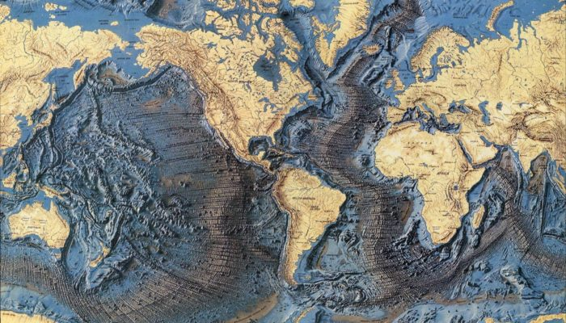

GEOMORFOLOGÍA EN AMBIENTES TROPICALES#
{kind=link}

Como referenciar: Aristizábal Edier. 2025. Libro guía del curso Geomorfología de la Facultad de Minas, Universidad Nacional de Colombia.
Note
Este libro web no corresponde a una construcción original del profesor Edier Aristizábal, representa una compilación de textos de diferentes fuentes, por lo cual se hace un esfuerzo en citar dichas fuentes, el cual seguramente no es suficiente. Si considera que su trabajo o el de otro investigador ha sido utilizado en este trabajo sin los créditos apropiados, le solicito el favor de escribir al correo evaristizabalg@unal.edu.co reportando dicha situación, en lo posible brindando la citación que corresponde.
Enfoque del Libro#
Los capítulos que siguen combinan la descripción clásica de procesos y geoformas con un enfoque cuantitativo de la geomorfología de procesos, en el que las tasas de los fenómenos (erosión, meteorización, levantamiento tectónico, transporte de sedimento) se expresan mediante leyes de transporte geomórfico y se contrastan con métodos de datación absoluta y relativa. Este enfoque cuantitativo, junto con numerosos ejemplos y tablas comparativas de tasas de proceso, sigue de cerca el tratamiento propuesto por Bierman and Montgomery [2013] en Key Concepts in Geomorphology, complementado con textos clásicos sobre morfotectónica [Burbank and Anderson, 2011], geomorfología glacial [Benn and Evans, 2010], volcánica [Francis and Oppenheimer, 2004], eólica [Bagnold, 1941, Pye and Tsoar, 2009] y de movimientos en masa [Varnes, 1978, Cruden and Varnes, 1996], entre otras fuentes citadas a lo largo del texto y compiladas en Referencias.
La terminología y las definiciones precisas de geoformas y procesos se contrastan adicionalmente con dos grandes obras de referencia colectivas: la Encyclopedia of Geomorphology [Goudie, 2004] y el Treatise on Geomorphology en 14 volúmenes [Shroder, 2013], ambas producidas bajo el auspicio de la comunidad internacional de geomorfólogos. Para temas especializados se incorporan además fuentes específicas: métodos de geocronología cuaternaria [Noller et al., 2000, Walker, 2005], evaluación cuantitativa de avenidas torrenciales [Rickenmann, 2016], vulcanología y peligros volcánicos [Francis and Oppenheimer, 2003], geoinformática aplicada a la gestión de desastres [Pirasteh and Li, 2017], hidráulica de canales y estructuras fluviales [Radecki-Pawlik et al., 2017], y los fundamentos físicos del cambio climático [Archer, 2006].